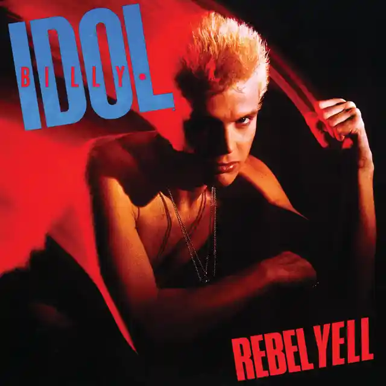

Musiques
Top Auteurs
 Billie Eilish
Billie Eilish John Michael Howell
John Michael Howell Surprise
Surprise
Top Albums
 League Of Legends - Arcane
League Of Legends - Arcane Brat - Charli XCX
Brat - Charli XCX Alba l'Heure Bleu - Bekar
Alba l'Heure Bleu - Bekar
Top Musiques
 Plan B - Alpha One
Plan B - Alpha One 
Eyes Without A Face - Billy Idol Ego - Quing Madi
Ego - Quing Madi
Billie EilishJohn Michael HowellSurpriseLeague Of Legends - ArcaneBrat - Charli XCXAlba l'Heure Bleu - BekarPlan B - Alpha One 
Eyes Without A Face - Billy IdolEgo - Quing Madi